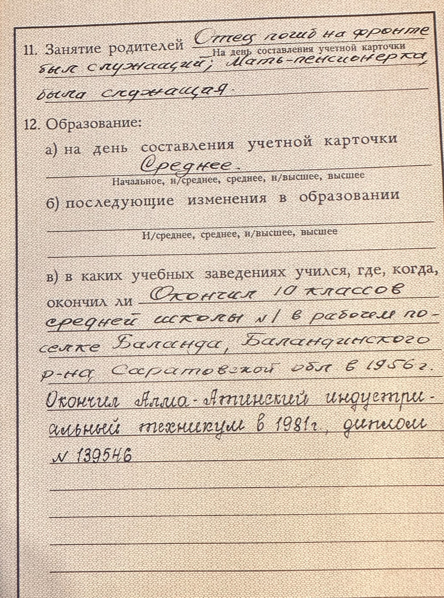

Глава IX
Великое молчание
Есть документ, который на первый взгляд будто принадлежит совсем другой истории. Не храмовой и не дореволюционной, а советской.
Это учётная карточка члена КПСС моего отца, Владимира Сергеевича Каменского. Обычный советский документ: фамилия, год рождения, место рождения, социальное положение, комсомол, кандидатский стаж, вступление в партию, образование, сведения о родителях.
Отец родился в 1939 году в Колокольцовке Саратовской области, прошёл комсомол, стал кандидатом в КПСС в апреле 1960 года, членом партии — в июне 1961 года. В карточке указано: национальность — русский, родной язык — русский, социальное положение — рабочий. Позднее он окончил Алма-Атинский индустриальный техникум.
Рядом — короткая строка о его родителях: «Отец погиб на фронте, был служащий. Мать — пенсионерка, была служащая». За этой сухой фразой стоит вся перемена семейной судьбы. Ещё недавно за спиной семьи были священники, храмы, семинарии и епархиальные ведомости. Теперь — язык советской анкеты: рабочий, служащий, комсомолец, член партии.
 |
 |
|---|
Учётная карточка члена КПСС Владимира Сергеевича Каменского. Лицевая сторона.
Для меня эта карточка — одно из объяснений великого молчания. Отец жил в системе, где дореволюционное происхождение, священники, лишенцы и репрессии могли быть не семейной гордостью, а угрозой. Поэтому о прошлом не рассказывали свободно. Его прятали.
Но партийная карточка объясняет только внешнюю сторону молчания. В семье уже были аресты, сроки и опыт того, что происхождение может стать опасным. Среди тех, кто помогает это понять, был Владимир Евгеньевич Каменский — родной брат моего деда Сергея Евгеньевича, сын Евгения Ивановича и Анны Константиновны.
Владимир Евгеньевич родился 10 июля 1910 года в селе Шклово Аткарского уезда. Он был сыном священника, но взрослая жизнь уже принадлежала советскому времени. По документам он имел среднее образование и работал главным бухгалтером Тамалинского Госбанка в посёлке Тамала Пензенской области.
В 1937 году его арестовали по статье 58-10 — антисоветская агитация — и приговорили к восьми годам исправительно-трудовых лагерей. В 1956 году он был реабилитирован. Это был удар не по далёкой боковой ветви, а по детям Евгения Ивановича — по тем, кто уже пытался жить внутри новой советской реальности.
Через поколение этот страх отозвался снова — в судьбе Валентина Сергеевича Каменского, старшего брата моего отца. Валентин Сергеевич родился в 1936 году в селе Колокольцовка Салтыковского района Саратовской области. Он жил в Энгельсе и работал слесарем на заводе автотракторных зажигательных свечей.
Слесарь. Завод. Адрес. Квартира. Уголовная статья.
29 октября 1958 года Валентин Сергеевич был арестован. 13 января 1959 года Саратовский областной суд осудил его по той же статье 58-10 — антисоветская агитация. Приговор — семь лет исправительно-трудовых лагерей. Ему было чуть больше двадцати. 24 апреля 1992 года он был реабилитирован посмертно.
Владимир Евгеньевич — сын священника, арестованный в 1937 году. Валентин Сергеевич — уже следующее поколение, молодой рабочий советского времени, снова статья 58-10.
Разные годы, разные люди, один мотив: слово, признанное властью опасным. Теперь я лучше понимаю, почему в семье многое не произносили. Молчание было не пустотой. Оно было способом выжить.